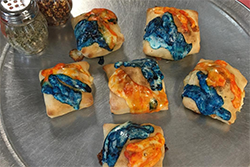

Some trends just happen for reasons that have nothing to do with sanity. The concept of trying to eat Tide Pods, or even just putting them into your mouth in the first place, is certainly one of the more insane. But, this has led to the even stranger idea of creating Tide Pod-inspired food!

Yes, it's Tide Pod Pizza! (Or rather, Tide Pod Pizza bites). And the delicious cream-filled Tide Pod Donuts. Yum!